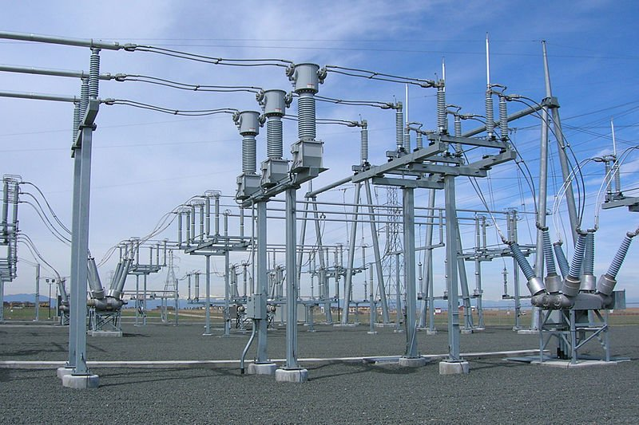
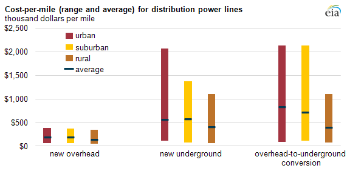

The topics discussed in this page are:
The topics discussed in this page are:
Today, the fundamentals of the electricity distribution system are similar to the first AC systems designed by Tesla and Westinghouse. After electricity is generated and moved along the high-voltage transmission system, it comes off the transmission grid at local distribution substations where the voltage is reduced or “stepped down” by special equipment called transformers. This process can take electricity of up to 765,000 volts and step it down to levels under 50,000 volts.[7] The distinction between transmission and distribution lines is not a hard and fast rule, but, generally speaking, distribution lines tend to have voltages below 50,000.
How do transformers change electricity from high voltage to low? A transformer has two cores, each wrapped in copper wiring, with an electromagnetic field passing between them. When entering the transformer, the power travels through a core with many winds of copper wiring surrounding it. As it leaves the transformer, it passes the other core with many fewer winds, resulting in electricity with much less voltage. The concept sounds easy, but high-voltage transformers are a big investment—they each cost millions of dollars and weight hundreds of tons.[8]
Low voltage electricity can then be distributed through cities and neighborhoods on local distribution power lines.[9] Before the electricity enters houses and business, it is usually stepped down in voltage once again on transformers near the customer (such as the pole-mounted transformers pictured below). For some industrial customers like factories, the voltage may still be relatively high as it reaches its destination, usually between ,000 and 13,000 volts. The power that reaches most residential and commercial customers, however, comes in at 120 or 240 volts.[10]
Once the electricity reaches its final destination, it runs through a meter for billing purposes. These meters have traditionally been electromechanical devices that measure the electricity as it passes through, like the one pictured below. Historically, an employee of the distribution company (a so-called meter reader) would come to read how much power had been used during the billing cycle.
Today, meters are frequently more high-tech and can communicate with the distribution company without a meter reader going to the trouble of checking each meter individually. These new technologies are commonly referred to as “smart meters.” Smart meters use advances in information technology to allow the various pieces of the power grid (power generators, distributors and consumers) to communicate more effectively and in real time.
Collectively, these technology-enabled communications between different parts of the grid are referred to as the “smart grid.” As electric utilities convert analog features to digital, the grid is becoming smarter and allowing for new types of communication. For example, the smart grid allows customers with smart meters to change their consumption patterns (if they choose) by reacting to real-time prices in the wholesale power market.[11] It also allows power companies to better detect grid abnormalities or outages. However, replacing the existing infrastructure with a “smarter” one is expensive and can make the grid more susceptible to cyber security threats.[12]
Distribution is essentially the retail end of the electricity business. Currently, distribution makes up roughly 32 percent of the total cost of electricity—out of the 9.9 cents/kilowatt-hour (kWh) that Americans paid for electricity on average in 2012, distribution accounted for about 3.1 cents/kWh.[17]
Early in the electrification of the U.S., state-level public utility regulators were concerned that electricity companies would use their near-monopoly power to exploit consumers. In response, regulators extended the reach of public utility commissions to regulate electric utilities in the same way they had regulated existing industries such as railroads. The same regulatory bodies created in the late 19th and early 20th centuries are still in place today.[18]
Most often, a state Public Utility Commission (PUC) establishes a maximum rate that power companies are allowed to charge their customers based on the cost of providing electricity. PUCs also scrutinize costs incurred by distribution companies under a “prudence” test before the costs can be recovered. Periodically, PUCs review existing rate structures or the underlying costs and make changes to ensure that the utilities remain viable while minimizing sharp rate increases.[19]
Seventeen states and the District of Columbia now allow electricity customers to buy from competitive retail suppliers rather than the standard distribution company. This concept is known as retail competition or retail choice. The power sold by competitive suppliers still flows on the lines owned by the distribution company, but retail competition allows customers the choice to contract with a third-party supplier for power sold on the same infrastructure.[20]
Any power produced by on-site generators can be used by the customer or cogeneration facility. If there is more electricity generated than is used on-site or in the home, that power can travel back through the meter and onto the distribution grid, providing power in those moments for other local customers. Customers feeding electricity back to the grid can present unique challenges for grid operators trying to manage supply and demand efficiently. For example, in cases such as Hawaii’s, unwanted solar energy that utilities are forced to take may add too much energy to an already-taxed system, increasing the risk of voltage spikes.[26]
Since 2000, the utility industry has invested over $275 billion (2012 USD) on distribution networks.[28] Going forward, investment in new distribution infrastructure through the year 2030 is expected to reach as high as $582 billion.[29] This investment is driven in part by the unavoidable need to replace aging equipment and in part by the push for new “smart” equipment. As with investment levels, residential electricity prices are also rising, with rates in New England, the Mid-Atlantic, the Mountain area, the South Atlantic, and the East North Central accounting for the highest jump in rates.[30] In fact, U.S. retail residential prices for the first half of 2014, at 12.3 cents/kWh, increased 3.2 percent from the same time in 2013, the highest year-to-year increase during the first half of the year since 2009.
Currently, 43 states and the District of Columbia have adopted formal net metering policies. While there is some variation, customers are generally reimbursed for the electricity they supply back to the grid at the full retail rate, when utilities could purchase power from local power plants at wholesale prices. But most customers do not supply power to the grid, and this cost shift from net metering customers to others (generally from solar users to non-solar users) has driven discussions on reforming net metering policies nationwide. Finding a fair way to address these issues going forward is essential for promoting long-term equity and reliability in the power grid.
Electricity may be the one industry in which suppliers actively encourage customers to use less of their product, and that is partly due to demand-side management (DSM) policies. DSM policies such as energy efficiency laws encourage or force utilities to sell less electricity, particularly during peak hours when electricity use and electricity prices are highest.[31]
DSM policy also plays a role in the Environmental Protection Agency’s (EPA’s) recently proposed power plant regulations. EPA administrator Gina McCarthy, in her testimony during a Senate hearing on the power plant regulations, said, “What we’re projecting is that consumers will see a lowering of their energy bills, and that’s because we’re getting waste out of the system…it’s the cheapest, most effective way to get these reductions—to get more efficient.”[32]
Critics of DSM point out two fundamental problems: 1) DSM policies start with a false premise—they assume everyone uses too much electricity to begin with, which is impossible to know for each individual household, and 2) DSM policies fail to accomplish their stated goals—as the Institute for Energy Research has previously noted, energy efficiency mandates can have a “rebound effect.” That is, people increase their use of energy-consuming technologies as they become more efficient, which undermines the initial goal of using less energy.[33]
Thanks to the work of innovators like Thomas Edison and George Westinghouse, we have a robust electricity distribution system today, but we must continue to work to make sure our electricity is reliable and affordable for future generations of Americans. That starts with an appreciation of how far we have come and how fortunate we are to have access to the electricity that powers our lives.